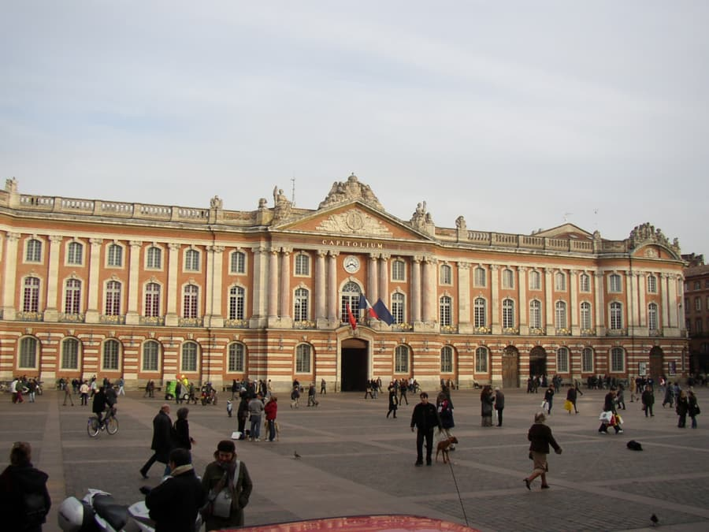

Hei, jeg heter Oskar og har bodd i Toulouse i litt over tre år nå. Jeg visste ikke helt hva jeg gikk til når jeg begynte på NORGINSA, men jeg skulle studere på fransk i Toulouse. Jeg flyttet dermed ned til Toulouse for å begynne på et studie som varer i fem år, noe som passer meg godt. Det gir stabilitet og etter hvert har jeg heller ikke sett et behov for å reise fra Toulouse. Mer om dette skal jeg fortelle dere om i to artiker om Toulouse og Frankrike.
Toulouse har blitt en by jeg er veldig glad i. Dersom man kunne flyttet byen til Norge hadde jeg garantert flyttet dit. Hvorfor det spør du? Det er ganske åpenbart for meg, selv om været skulle endre seg drastisk.
Jeg setter også veldig stor pris på hvor lett det er å komme seg rundt, selv for noen som ikke har bil. Jeg har kjørt en gang i Toulouse sentrum, og det er noe av det verste jeg har gjort i Toulouse. På andre siden av spekteret er det metroen, bussen, trikken (Selv om den går UTROOOOOLIG treigt), og sist og ikke minst på sykkel. Jeg vet ikke om du har vært i Oslo, hvor det er ganske greit utbygd med sykkelstier. Jeg vil mene at det er enda bedre utbygd i Toulouse.
Ta metroen til sentrum for å kjenne på en storby, med ulike deler som vi ikke har like mye av i Norge. Man har store plasser med mange mennesker, flotte bygninger, utendørs og innendørs markneder, samt loppemarkeneder.
Selv om det er ulike elementer jeg savner, synes jeg pakken som Toulouse gir er fantastisk. Kanskje DU også kommer til å like deg her?